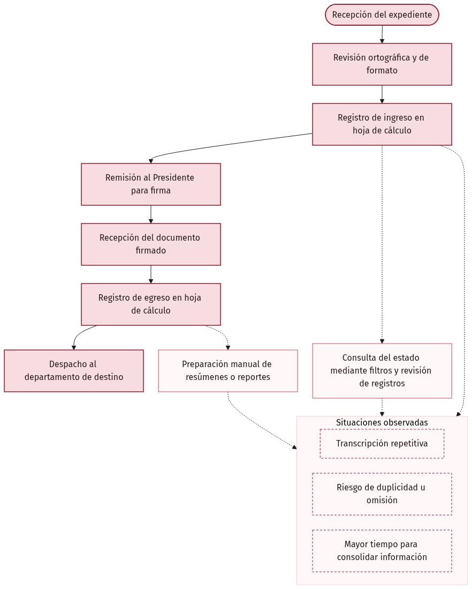
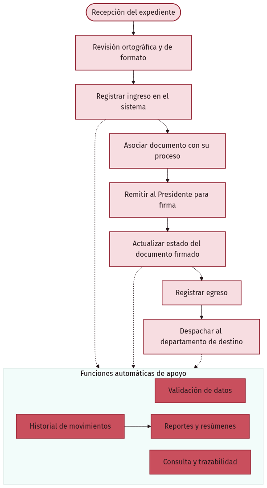
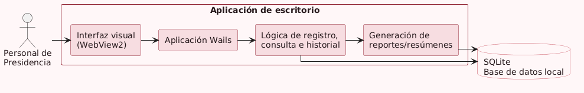

Prototipo de sistema para el Departamento de Presidencia de Venangocupet, S.A.
El registro manual hacía difícil responder con rapidez.

Hojas de cálculo · transcripción · reportes manuales


Una solución orientada a reducir tareas repetitivas y conservar el recorrido documental.